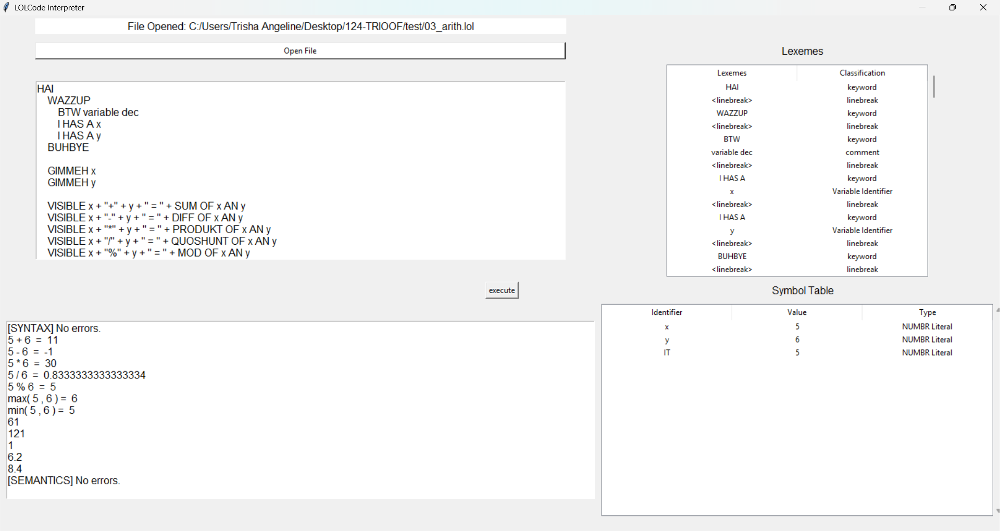
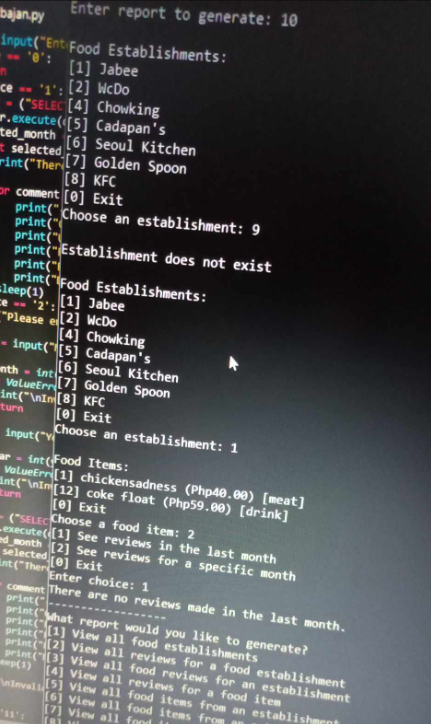
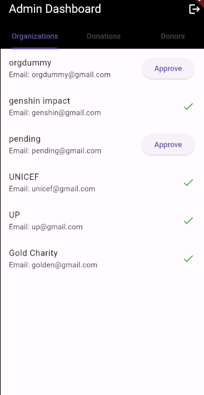
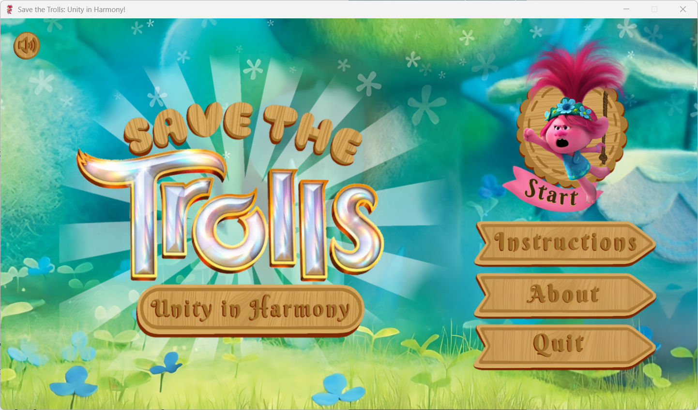

Autobiography
+ Currently a BSCS undergrad in UPLB, I am just floating my way through this thing called life.
+ I usually say I have six raisons d'être which are Shoujo☆Kageki Revue Starlight, BanG Dream!, Keyakizaka46, D4DJ, all kinds of sapphic media, and music.
+ My other main interest is playing video games from any genre as long as I find them interesting.
+ I'm currently mainly playing League of Legends: Wild Rift and Free Fire.
Skills
+ programming and debugging algorithms and applications using PLs such as Python, C, Java, and Dart
+ creating and managing databases using SQL and MariaDB
Previous Projects
TRIOOF LOLCODE INTERPRETER (2024)

interpreter for LOLCODE
- created a second prototype for the lexical, syntax, and semantic analyzers of the project, some of which were integrated or used to debug the final project
OKBAJAN (2024)

food item and review information system
- helped create the entity relationship diagram (ERD) for the project
- helped turned the ERD into appropriate relational tables
- created queries and functions utilized in the project
ELBIDONATE (2024)

mobile donation application
- created the donor’s view of the application which includes a homepage, the donation form, and profile of the donor
SAVE THE TROLLS: UNITY IN HARMONY (2023)

desktop rhythm game based on the Trolls franchise
- conceptualized and designed the main game play and objects
- programmed most of the algorithms and functions for the interaction of objects in the rhythm game